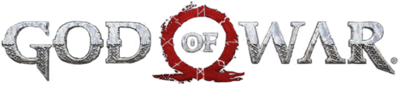

A Saga God of War
| God of War | |
|---|---|
|  | |
| Gênero(s) |
Ação-aventura Hack and slash |
| Desenvolvedora(s) |
Santa Monica Studio Portátil e Mobile
Portes
|
| Publicadora(s) |
Sony Interactive Entertainment Mobile
|
| Criador(es) | David Jaffe |
| Artista(s) | Charlie Wen |
| Plataforma de origem | Playstation 2 |
| Primeiro título |
God of War |
| Último título |
God of War Ragnarök |
| Página oficial open_in_new | |
God of War é uma série de jogos eletrônicos de ação-aventura e hack and slash, criada por David Jaffe da Santa Monica Studio da Sony, e publicado primeiramente para os consoles PlayStation. Iniciada em , exclusivamente no console PlayStation 2 (PS2), a série tornou-se carro-chefe para a marca PlayStation, consistindo em nove jogos lançados, e em várias plataformas até o momento. Baseada em mitologias distintas, o enredo principal da série segue Kratos, um guerreiro espartano que foi levado a matar sua família por seu antigo mestre, chamado de deus da guerra Ares. Isso desencadeia uma série de eventos que levaram às guerras contra os panteões mitológicos. A era da mitologia grega da série, mostra Kratos seguindo um caminho de vingança devido às maquinações dos deuses do Olimpo, enquanto a era da mitologia nórdica, que apresenta seu filho Atreus como um protagonista secundário, e mostra um Kratos diferente, cansado e mais velho em um caminho de redenção, o que inadvertidamente coloca os dois em conflito com os deuses nórdicos e em busca do impedimento do Ragnarök.
A Santa Monica desenvolveu todos os títulos principais da franquia, enquanto a Ready at Dawn e Javaground/Sony Online Entertainment-Los Angeles (SOE-LA) desenvolveram os três jogos paralelos da série. A Sony Interactive Entertainment (SIE) publicou todos os jogos, exceto o título de telefone celular, que foi publicado pela Sony Pictures Digital. Os primeiros sete jogos constituem a mitologia grega da franquia. God of War (), God of War II () e God of War III () compõem sua trilogia principal; os dois primeiros foram lançados no PlayStation 2 (PS2) e o terceiro no PlayStation 3 (PS3). Uma pré-sequência, Ascension (), também foi lançada para PlayStation 3 (PS3). Outros jogos incluem Chains of Olympus () e Ghost of Sparta () para PlayStation Portable (PSP), e Betrayal () para telefones celulares que suportam a plataforma Java, Micro Edition (Java ME). A era nórdica da série começou com o título de lançamento em , também intitulado God of War e lançado inicialmente para o PlayStation 4 (PS4). Uma sequência do jogo intitulada God of War Ragnarök, foi lançada em para PlayStation 4 (PS4) e PlayStation 5 (PS5), concluindo assim, a era nórdica.
Os títulos da série foram aclamados como alguns dos melhores jogos de todos os tempos. A franquia recebeu diversos prêmios, incluindo vários reconhecimentos de Jogo do Ano para os títulos de e . Alguns jogos também foram remasterizados para plataformas mais recentes da PlayStation. Até , a franquia vendeu mais de 51 milhões de unidades em todo o mundo.
Jogos Publicados
| Ano | Título | |
|---|---|---|
| God of War | ||
|
God of War II God of War: Betrayal |
||
| God of War: Chains of Olympus | ||
| God of War Collection (PS3) | ||
|
God of War III God of War: Ghost of Sparta |
||
| God od War: Origins Collection | ||
| God of War Saga | ||
| God of War: Ascension | ||
| God of War Collection (PS Vita) | ||
| God of War III Remastered | ||
| God of War | ||
| God of War Ragnarök | ||
| Legenda: | ||
| Era Grega | Nenhum jogo foi lançado | |
| Houve lançamento | ||
| Era Nórdica | Nenhum jogo foi lançado | |
| Houve lançamento |
Mitologia Grega (Primeira Era)
God of War foi lançado pela primeira vez na América do Norte em para o PlayStation 2. Após dez anos a serviço dos deuses do Olimpo, o espartano Kratos é encarregado por Atena de encontrar a Caixa de Pandora; a chave para derrotar Ares, o deus da guerra, que está destruindo a cidade de Atenas. Uma série de flashbacks revelam que Kratos já foi o servo de Ares, que salvou o espartano e seu exército da aniquilação em uma batalha, mas o enganou para matar sua família, o que forçou sua metamorfose de "Fantasma de Esparta". Kratos eventualmente encontra a Caixa de Pandora, e depois de finalmente matar Ares, ele ascende ao Monte Olimpo para se tornar o novo deus da guerra.

God of War II foi lançado pela primeira vez na América do Norte em para o PlayStation 2. Irritado com seus companheiros deuses, Kratos foi até à cidade de Rhodes. Zeus intervém e trai Kratos, que é salvo pela Titã Gaia. Ela diz que ele deve agora encontrar as Irmãs do Destino, que podem mudar seu destino e evitar sua morte nas mãos de Zeus. Kratos é finalmente bem-sucedido e quando ele está prestes a matar Zeus, Atena se sacrifica para salvá-lo para preservar a vida do Olimpo, e diz a Kratos que ele é o filho de Zeus. Kratos então une forças com Gaia e os Titãs para atacar o Olimpo.

God of War: Betrayal foi lançado em para celulares que suportam o Java ME. É o único jogo da série a ser lançado como um side-scroller bidimensional (2D) e lançado em uma plataforma que não é o PlayStation. A narrativa do jogo ocorre entre os eventos de Ghost of Sparta e God of War II. Kratos é enquadrado por assassinato e ataques em toda a Grécia em busca do verdadeiro assassino. Kratos sucumbe à sede de sangue e mata Cérix, o filho do deus Hermes — um ato que o afasta de seus companheiros deuses.

God of War: Chains of Olympus foi lançado pela primeira vez na América do Norte em para o PlayStation Portable. Sua narrativa ocorre durante algum momento entre os dez anos de serviço de Kratos aos deuses do Olimpo. Kratos interrompe uma invasão persa da cidade grega de Ática, e descobre que o mundo foi mergulhado na escuridão pelo deus Morfeu. Kratos investiga o sequestro do deus do sol Hélio e impede o plano maquiavélico da deusa Perséfone e do Titã Atlas para destruir o mundo.
God of War III foi lançado pela primeira vez na América do Norte em para o PlayStation 3. Reignificando a Titanomaquia, Kratos é logo abandonado pelos Titãs, que estavam usando-o apenas para exigir sua própria vingança. Ajudado pelo espírito de Atena, que foi elevada a um novo nível de entendimento, ela o instrui a procurar a Chama do Olimpo para derrotar Zeus. Kratos envolve os deuses e os Titãs em uma série épica de batalhas através do submundo e do Olimpo e descobre que a Caixa de Pandora está dentro da Chama. Ele descobre que a própria Pandora é a chave para pacificar a Chama e permitir que ele abra a Caixa. Depois de finalmente matar Zeus, ele se recusa a ajudar Atena a assumir o papel de novo patrono da humanidade e desaparece.
God of War: Ghost of Sparta foi lançado pela primeira vez na América do Norte em para o PlayStation Portable. Situado entre os eventos de God of War (2005) e Betrayal, Kratos, o deus da guerra, ainda é assombrado por pesadelos de seu passado mortal e embarca em uma missão para descobrir suas origens, encontrando sua mãe, Callisto. Ele descobre que seu irmão Deimos foi levado pelos deuses e aprisionado pelo deus da morte, Tânato, e decide encontrar e salvar seu irmão. Apesar de bem-sucedido, Tânato envolve os irmãos em combate e mata Deimos. Kratos, em seguida, mata Tânato e retorna ao Olimpo, ainda mais enfurecido com os deuses.

God of War: Ascension foi lançado pela primeira vez na América do Norte em para o PlayStation 3. É o único jogo da série que possui modo de multijogador para partidas competitivas e cooperativas. Seis meses depois que Kratos matou sua esposa e filha, ele foi preso pelas três Fúrias por quebrar seu juramento de sangue a Ares. Com a ajuda do guardião do juramento Orkos, Kratos descobre que Ares e as Fúrias planejam derrubar o Monte Olimpo. O espartano escapa de seu aprisionamento, matando ainda as Fúrias e Orkos, que implora pela libertação. Embora livre do vínculo de Ares, Kratos começa a sofrer os pesadelos que o atormentam há anos.

Mitologia Nórdica (Segunda Era)
God of War foi lançado mundialmente em para o PlayStation 4. Muitos anos após os eventos de God of War III, Kratos acabou no mundo da mitologia nórdica na antiga Noruega, no reino de Midgard, e tem um filho chamado Atreus. Depois que a segunda esposa de Kratos e a mãe de Atreus, Faye, faleceu de uma causa desconhecida, os dois partiram em uma jornada para cumprir seu desejo final de espalhar suas cinzas no pico mais alto dos nove reinos, mais tarde revelado estar em Jotunheim. Ao longo de sua jornada, eles são atacados por Baldur, que foi enviado por Odin para chegar a Faye a fim de prevenir o Ragnarök, sem saber que ela havia morrido. Depois que Kratos finalmente mata Baldur, o Fimbulwinter com duração de três anos começa, com o Ragnarök estando por vir logo em seguida, o que não deveria ocorrer por mais de cem anos. Enquanto a mãe de Baldur, Freya, jura vingança contra Kratos, ele e Atreus completam sua jornada e descobrem que Faye era uma gigante que previu o futuro e escolheu permanecer em Midgard; também é revelado que Atreus foi originalmente chamado de Loki por sua mãe antes de Kratos renomeá-lo em memória de um ex-camarada espartano.

God of War Ragnarök foi anunciado em e lançado em para PlayStation 4 e PlayStation 5, marcando o primeiro jogo da série lançado em um console de geração anterior e atual simultaneamente. Nele, ocorre os eventos do Ragnarök preditos no jogo anterior. Cory Barlog havia confirmado anteriormente que o título de 2018 não seria o último jogo de Kratos, e que os jogos seguintes continuariam a ser ambientados no ambiente nórdico e incluiriam Atreus. Eric Williams, o diretor do jogo, afirmou no evento PlayStation Showcase em setembro de 2021 que Ragnarök "encerrará a série nórdica".
Jogabilidade
Ao longo da primeira era, os jogos apresentavam uma câmera cinematográfica fixa em terceira pessoa, com exceção de Betrayal, que é o único que apresenta uma visão em 2D de rolagem lateral. Em God of War de 2018, a câmera deixou de ser fixa e passou a ser uma câmera livre sobre o ombro do personagem. Uma câmera em primeira pessoa é brevemente apresentada em God of War III e Ascension. Ao longo da série, o jogador controla o personagem Kratos em uma combinação de elementos de hack and slash e plataforma, além de quebra-cabeças para atingir objetivos e completar a história (elementos de plataforma foram removidos de God of War de 2018 devido à mudança de câmera). God of War de 2018 adiciona Atreus, filho de Kratos, e embora o título seja jogado inteiramente como Kratos, há momentos em que o jogador pode controlar passivamente o seu filho.
Durante a mitologia grega, a arma principal de Kratos é um par de lâminas que aparecem em três iterações: as Blades of Chaos, as Athena's Blades e as Blades of Exile. Cada uma delas possuem uma execução similar, mas diferem nos tipos de combos e na quantidade de dano que cada uma produz, bem como nas diferenças visuais. Outras armas também são obtidas durante os jogos e variam na jogabilidade. Magias também são usadas, e quatro habilidades são normalmente adquiridas. God of War III difere no que em vez de habilidades separadas, existem quatro armas principais que possuem suas próprias magias.

O jogo também apresenta "Itens" — armas secundárias adicionais com uso limitado, como o Bow of Apollo. Com cada jogo novo, a maioria das armas e magias são perdidas por meio de uma estratégia de enredo, e um novo arsenal de armas e habilidades é adquirido durante a campanha. Ascension difere dos jogos anteriores porque, em vez de adquirir novas armas que são mantidas durante todo o jogo, o jogador coleta até cinco World Weapons (como uma espada ou um dardo) de uso limitado. Quando não há uma World Weapon equipada, o jogador pode socar ou chutar os oponentes como parte de uma nova mecânica adicionada ao jogo.
Em God of War de 2018, a arma principal de Kratos é um machado de guerra mágico chamado Leviathan Axe. Ele pode ser jogado e convocado de volta para sua mão, semelhante ao martelo Mjölnir, de Thor. Mais tarde no jogo, ele recupera as Blades of Chaos, que possuem uma execução semelhante ao dos jogos gregos, mas com habilidades diferentes. Tanto o Leviathan Axe quanto as Blades of Chaos podem ser atualizados com ataques mágicos especiais chamados de ataques rúnicos. Cada arma possui um ataque rúnico leve e pesado, e o jogador pode escolher quais ataques rúnicos equipar nas armas.
A série apresenta um combate baseado em combos e inclui um recurso de quick time event (QTE), também chamado de "ataques sensíveis ao contexto", que é iniciado quando o jogador enfraquece um oponente ou para realizar uma manobra defensiva. Durante o uso do recurso, o controle de Kratos fica limitado; caso o jogador obtenha sucesso, a batalha finaliza, enquanto o fracasso geralmente resulta em danos ao jogador. Semelhantemente ao sistema de QTE, Ascension apresenta um sistema de combate livre e rápido, permitindo que os jogadores escolham quando atacar ou esquivar com base nas ações do inimigo. Uma manobra de agarrar pode ser usada em oponentes menores.
Em God of War de 2018 isso mudou; depois que um inimigo for enfraquecido o suficiente, um botão aparecerá acima de sua cabeça e, dependendo do oponente, Kratos pode rasgá-lo ao meio ou agarrá-los e jogá-los em outros inimigos, entre outros resultados possíveis. Ele também pula em cima e monta em grandes inimigos, como ogros, fazendo com que eles ataquem outros inimigos, semelhantes aos ciclopes dos jogos gregos.
Kratos geralmente possui uma habilidade especial, que fornece invulnerabilidade temporária e aumento do dano de ataque. Essa habilidade se tornou uma característica contínua da jogabilidade ao longo da série — Rage of the Gods no primeiro God of War e Ascension, Rage of the Titans em God of War II, Rage of Sparta em God of War III e Thera's Bane em Ghost of Sparta. Essa habilidade pode ser recarregada ao atacar os inimigos em combate e ao ganhar orbes específicos no jogo. A Thera's Bane, no entanto, é recarregada automaticamente. Embora Kratos não retenha nenhuma relíquia da era grega em God of War de 2018, ele tem uma habilidade de fúria, chamada Spartan Rage, e com essa habilidade, o protagonista usa poderosos ataques com as mãos nuas, em oposição das armas, para causar grandes danos em inimigos.
Gorgon Eyes e Phoenix Feathers, encontrados em todos os jogos da era grega em baús não marcados (baús brancos em Ascension), aumentam a quantidade máxima das barras de vida e magia, respectivamente. Minotaur Horns, que aumentam a capacidade máxima dos medidores de Itens e Chamas, estão disponíveis em God of War III e Ghost of Sparta, respectivamente. O medidor de Itens permite o uso de armas secundárias, enquanto o medidor de Chamas permite o uso da Thera's Bane. O tamanho das barras vão aumentando em incrementos e atingem seu ponto máximo quando um certo número de Eyes, Feathers e Horns são encontrados.
Outros baús contêm orbes verdes, azuis ou vermelhas. Orbes verdes reabastecem a vida do jogador, orbes azuis reabastecem a magia permitindo mais uso das habilidades especiais, enquanto orbes vermelhas fornecem pontos de experiência (XP) a fim de atualizar armas e magias para novos ataques mais poderosos, e reabastecem o Rage of the Gods do primeiro God of War. Orbes douradas, encontradas em God of War II e Ascension, e orbes brancas em God of War III, reabastecem o medidores de fúria em vez de orbes vermelhas; o medidor de fúria em Ascension também é recarregado por meio de ataques a inimigos. Baús com cores variáveis, que permitem que os jogadores escolham qual medidor reabastecer, também estão disponíveis. Orbes vermelhas também podem ser coletadas matando inimigos e destruindo certos objetos inanimados. Chefes e oponentes mais poderosos liberam uma combinação de orbes coloridas quando mortos por meio de um quick time event.
Em God of War de 2018, as Iðunn's Apples substituíram as Gorgon Eyes para aumentar o tamanho máximo do medidor de vida, enquanto os Horns of Blood Mead aumentam o tamanho máximo do medidor de fúria. Enquanto o jogo retém orbes verdes de saúde para reabastecer o medidor de vida, a magia é feita de forma diferente. Em vez de orbes azuis, há um tempo de reabastecimento em ataques rúnicos mágicos. Quando esse tempo termina, o ataque rúnico mágico pode ser usado novamente. Além disso, os jogadores acumulam uma moeda chamada Hacksilver, que é um componente chave na criação e compra de novos itens, como uma nova armadura ou atualização da armadura atual, e XP é usado para aprender novas habilidades de combate. Os baús neste jogo fornecem uma variedade de itens diferentes.
Ascension é a único jogo da série que apresenta um modo multijogador, tratando-se um modo somente on-line para partidas competitivas e cooperativas. Até oito jogadores em duas equipes de dois a quatro competidores (ou um mata-mata de quatro a oito jogadores) lutam pelo controle de um mapa para ganhar recompensas dos deuses. Os jogadores também podem lutar entre si em partidas um-a-um. Os jogadores devem vender a alma de seu campeão para Zeus, Hades, Ares ou Poseidon, o que permite que os jogadores experimentem diferentes armas, conjuntos de armaduras e poderes inspirados pelo deus de sua escolha, além de extras que podem ser desbloqueados.
Recepção
| Jogo | Metacritic |
|---|---|
| God of War () | 94/100 |
| God of War II | 93/100 |
| God of War: Betrayal | N/A |
| God of War: Chains of Olympus | 91/100 |
| God of War Collection |
91/100 (PS3) 73/100 (PS Vita) |
| God of War III | 92/100 |
| God of War: Ghost of Sparta | 86/100 |
| God of War: Origins Collection | 84/100 |
| God of War Saga | N/A |
| God of War: Ascension | 80/100 |
| God of War III Remastered | 81/100 |
| God of War () |
94/100 (PS4) 93/100 (PC) |
| God of War Ragnarök | 94/100 |
Em , o jornal The New York Times informou que a série tinha vendido mais de 51 milhões de cópias em todo o mundo. God of War (), God of War II, Chains of Olympus, God of War Collection, God of War III, God of War () e Ragnarök receberam aclamação da crítica por vários revisores, compilados pelo agregador de resenhas Metacritic, com os títulos de , e Ragnarök estando empatados como a maior pontuação da franquia, com uma nota 94/100.
Na época de seu lançamento, Raymond Padilla da GameSpy escreveu que God of War () é o "melhor jogo de ação de todos os tempos para agraciar o PS2". Outros críticos disseram da mesma forma que é um dos melhores jogos de ação de todos os tempos e recebeu mais de uma dúzia de prêmios de "Jogo do Ano". Em , foi nomeado o "sétimo melhor" jogo de PlayStation 2 de todos os tempos na lista "Top 25 Jogos de PS2 de Todos os Tempos" da IGN. God of War II também esteve na lista da IGN, e foi nomeado como o "segundo melhor" jogo de PlayStation 2 de todos os tempos. God of War II também tem sido chamado de um dos melhores jogos de ação de todos os tempos e é considerado o "canto do cisne" da era do PlayStation 2. Em , a Complex nomeou God of War II como o melhor jogo de PlayStation 2 de todos os tempos — onde God of War foi nomeado como o 11.º melhor — e o considera melhor do que seu sucessor, God of War III.